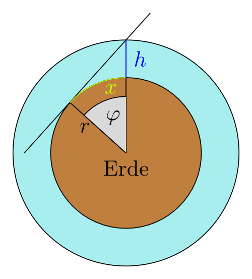

Aufgabenstellung
Der Burdsch Chalifa war 2010 das höchste Gebäude der Erde. Bis zur Spitze sind es 830 m.
Angenommen, die Erde wäre eine perfekte Kugel mit einem Radius von 6370 km und die Sicht wäre nicht durch Nebel, Wolken oder sonstige Hindernisse eingeschränkt. Aus welcher Entfernung, die man über die Erde direkt zum Burdsch Chalifa zurücklegt, könnte man den Burdsch Chalifa maximal sehen?
Situationsskizze
 Gesucht ist die Länge des neongrün hervorgehobenen Kreisbogens x.
{kind=link}
Rechenweg
$\begin{align} x &= \text{Umfang} \cdot \frac{\varphi}{360^\circ} \\ &= 2 \cdot r \cdot \pi \cdot \frac{\cos^{-1}(\frac{r}{r+h})}{360^\circ} \\ &= 2 \cdot 6370 \text{km} \cdot \pi \cdot \frac{\cos^{-1}(\frac{6370}{6370,83})}{360^\circ} \\ &= 102,8 \text{km} \end{align}$
Antwort
Bei optimalen, also unrealistischen, Bedingungen könnte man die Spitze des Burdsch Chalifa noch in 102,8 km entfernung sehen. Dies entspricht übrigens auch dem Punkt auf der Erdoberfläche, der vom Burdsch Chalifa am weitesten entfernt und zu sehen ist. Auch wenn nur die Luftlinie gemessen wird, sind es 102,8 km, da der Erdradius bedeutend größer als der Burdsch Chalifa ist.
Laut Bildzeitung kann man die Spitze des Burdsch Chalifa noch in 95 km sehen.
Erweiterung der Aufgabenstellung
Das Dorf Mileiha liegt direkt östlich vom Burdsch Chalifa (25° 11' 50'' N, 55° 16' 27'' O).
Wie weit östlich darf das Dorf maximal liegen, damit man die Spitze des Burdsch Chalifa bei optimalen Bedingungen noch sehen kann?
Hinweis: Es gelten noch immer die gleichen Voraussetzungen wie im ersten Teil der Aufgabe.
Situationsskizze
{kind=link}
Gesucht ist die grün eingezeichnete Kurve, die sich über die Erdoberfläche krümmt. Ihre Länge sei x. Um diese zu berechnen, müssen wir wissen welchen Radius die Kreisfläche hat, die entsteht, wenn man die Erde am 25. Breitengrad schneidet. Der Radius dieser Kreisfläche sei $r_{25}$.
Berechnung
$ \begin{align} \text{Breitengrad} &= 25 + \frac{11}{60} + \frac{50}{60 \cdot 60} \\ \text{Breitengrad} &= \frac{9071}{360} \approx 25,1972 \\ \cos(\frac{9071}{360}) &= \frac{r_{25,1972}}{6370\text{km}} \\ r_{25,1972} &= \cos(\frac{9071}{360}) \cdot 6370\text{km} \\ r_{25,1972} &\approx 5764\text{km} \end{align} $
Der soeben errechnete Radius kann einfach in die im ersten Abschnitt erarbeitete Formel eingesetzt werden: $ \begin{align} x &= 2 \cdot r \cdot \pi \cdot \frac{\cos^{-1}(\frac{r}{r+h})}{360^\circ} \\ &= 2 \cdot 5764 \text{km} \cdot \pi \cdot \frac{\cos^{-1}(\frac{5764}{5764,83})}{360^\circ} \\ &\approx 97,8 \text{km} \end{align} $
Nun sollte man noch berücksichtigen, dass die Beobachter wohl nicht auf der Erde kriechen, sondern ihre Augen in einer Höhe von ca. 1,6m sind:
$ \begin{align} x &= 2 \cdot 5764 \text{km} \cdot \frac{\pi}{360^\circ} \cdot ( \cos^{-1}(\frac{5764}{5764,83}) + \cos^{-1}(\frac{5764}{5764,0016}) \\ &\approx 102 \text{km} \end{align} $
Antwort
Der am weitesten entfernte Punkt, der direkt östlich vom Burdsch Chalifa steht und von dem aus die Spitze des Burdsch Chalifa unter optimalen Bedinungen noch erkannt werden kann, liegt ca. 102 km entfernt.
Anmerkung: Mileiha liegt ca. 60 km vom Burdsch Chalifa entfernt. Er müsste also von Mileiha zu sehen sein.